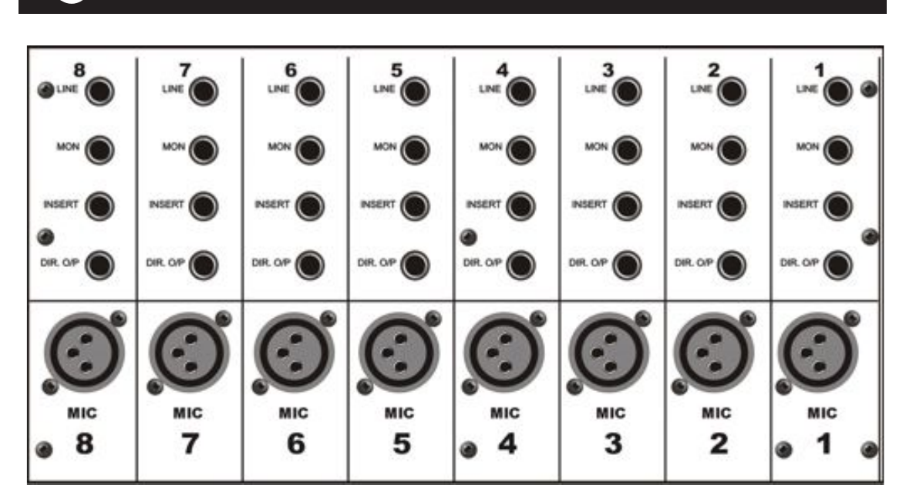
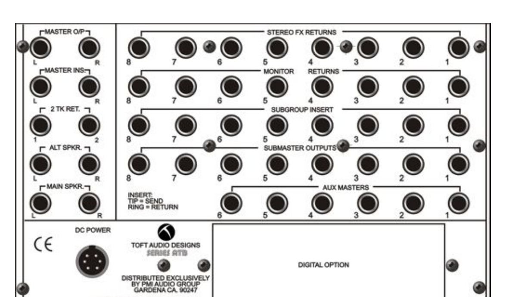

![The Toft Audio Designs Series ATB 16-channel console, photographed from directly above. On the left two-thirds: sixteen identical input channel strips, each with rows of magenta, green, and pink knobs and a white vertical fader at the bottom. In the middle-right: eight narrower submaster strips with green knobs and red vertical faders. On the right: the master section with bargraph meters, the auxiliary master knobs, two VU meters, talkback controls, and the blue stereo master fader. The console sits in a warm orange wood frame.](../../assets/images/module-03-week-08/toft-atb/console-overview.jpg)
Photo via Retro Gear Shop.
In Lectures 1 and 2 the destination of every signal flow was an audio interface: a small box, one or two inputs, plugged into the lab Mac, getting one signal at a time into the digital audio workstation (the recording software running on the computer; from here on I'll use the shorthand DAW for the whole flow from the audio interface into whatever software is doing the recording). That works when there's one mic and one sound to record. It stops working the moment there are seven mics on stage and the engineer needs to balance, EQ, and route each one independently to multiple destinations at once. The mixer is what gets used in that situation. It doesn't replace the audio interface; in a studio setup the mixer sits between the mics and the interface. The mics plug into the mixer, the engineer shapes and combines the signals on the console, and the mixer's outputs feed the audio interface, which still gets the result into the DAW. The interface's role shifts from "the only routing point" to "the link between the analog console and the digital recording," and the mixer becomes where the engineering work actually happens.
That description fits an analog mixer, which is what's in our studio and what this reading walks through. Every signal path on an analog mixer is a real voltage moving through physical circuitry; the mixer has no concept of digital audio on its own, which is why a separate audio interface is needed to get the output into a computer. A digital mixer is a different piece of equipment: its summing, EQ, routing, and effects all happen as math on digital audio samples rather than as voltages through circuits. Most modern digital mixers (Behringer X32, Allen & Heath SQ, Soundcraft Si, Yamaha QL, and others) include the analog-to-digital conversion stage inside the same box as the routing, and connect directly to a computer over USB or ethernet. In that setup, the digital mixer is the audio interface; every channel on the console can become a recording input to the DAW without a separate interface in the chain. The routing concepts are the same across both kinds (channel strips, aux sends, subgroups, masters, inserts), so the work you do on our analog Toft transfers directly to any digital console you'll meet in the field. The differences are in feel, in how settings get saved, and in whether the math is happening in copper or in code.
Take from the lab's gear storage: audio interface, headphones. Plug in and run through the start-of-session steps on the Session Routines card before continuing here.
A mixer (or console, or board, or desk: the words are interchangeable) is the piece of equipment in the middle of every multi-source audio workflow. Each source plugs into its own channel. Each channel has its own controls (level, EQ, routing, sometimes more). The channels combine into one or more outputs that go somewhere: speakers, headphones, a recorder.
The mixer's job is the same in every context: take many flows in, let the engineer shape each one, and send the combined result somewhere. What changes from context to context is what's connected at the input and where the output goes. Live sound and studio recording are two of those contexts. The hardware between them is the same hardware; the patching changes.
Our studio's console is the Toft Audio Designs Series ATB, designed by Malcolm Toft, who founded Trident Audio in 1972 and built consoles for studios that recorded David Bowie, Queen, Stevie Wonder, and many others. The Toft ATB is a modern descendant of that lineage: a smaller, more affordable design for project studios, but with the same kind of channel-strip layout you'd find on a console in a commercial studio. Once you learn this one, the next one will feel familiar.
The board has three kinds of strips, arranged left to right:
The rest of this reading walks each section, then runs the band through the console twice: once live, once in the studio.
Every input on the console is a vertical strip with the same set of controls, top to bottom. Learn one strip and you know all of them. Here's a single channel:
![An annotated photo of a single input channel strip on the Toft ATB. From top to bottom, with labels pointing to each control: 48V phantom power, Input/Monitor Reverse, Line, Phase, HF (selectable 8K and 12K), HM (sweep 1K to 15K), LM (sweep 100 Hz to 1.5K), LF (selectable 60 Hz and 120 Hz), High-pass filter 80 Hz, EQ In/Out. Then a section labeled '6 Auxiliary Sends': Aux 1 (pre-fader) and Aux 2 through 6 (pre or post). Then the inline monitor section: Aux 5 and 6 to Monitor, EQ to Monitor, Monitor Mute. Then the pan knob with Solo and Mute buttons. Then the 100mm 'Alps' type fader, with Signal Present and Peak indicators, an Assign to L&R button, and Assign to Groups 1-8 buttons.](../../assets/images/module-03-week-08/toft-atb/input-strip-annotated.png)
From top to bottom, the controls do this:
Input section. A button labeled +48V turns phantom power on (you met this in Lecture 1). A button labeled I/P REV (input reverse) swaps two signal paths inside the channel; we come back to it in section 3. A button labeled LINE switches between the mic input on the back and the line input on the back. A red knob labeled INPUT GAIN sets how much amplification the preamp applies. Same gain knob you set in Lab 1 to land peaks at -12 to -6 dBFS in Audacity; here it's setting the level going into the mixer's own internal flow.
Phase reverse and an 80 Hz high-pass filter. Two small switches. Phase reverse flips the polarity of the signal (sometimes needed when two mics on the same source are partially cancelling each other). The 80 Hz filter rolls off everything below 80 Hz, useful for cutting room rumble or wind on vocal mics.
You met phase in Lecture 1, inside the XLR cable: two wires carrying the same audio, one flipped upside down, summed at the interface so external noise cancels out (peak meets trough, the math collapses to silence). The phase-reverse button on the channel strip does the same flip operation, but here on the whole signal, on purpose. Two mics on the same source can sometimes produce signals that are partially out of phase with each other (some frequencies cancel, leaving the sound thin and hollow). Hitting phase-reverse on one of the two channels flips that channel's polarity and lets you check whether the sum gets stronger or weaker. Stronger means you'd been cancelling something; the flip fixed it. Weaker means leave the button alone.
Four-band equaliser. Four pairs of knobs. Each pair is a frequency control (which band of the spectrum to affect) and a boost/cut control (how much to change it). High, high-mid, low-mid, and low. Each band can boost or cut by 15 dB. The high and low are shelving (everything above or below a frequency moves together); the two middle bands are peaking (a bell curve centered on the chosen frequency). The whole EQ section can be switched into or out of the signal path with one button.
The EQ you used in Audacity () and the EQ on this channel strip do the same kind of work: boost or cut specific frequency ranges of the signal. The surface is different. In Audacity, you click points on a curve and the software shapes the audio mathematically; on the console, you turn knobs and an analog circuit shapes the signal as the voltage flows through it.
The other difference matters more: where in the signal flow the EQ sits. Audacity's Filter Curve EQ changes the audio data on the track when you click Apply (destructive: you can undo it during the session, but if you save and close, the change is permanent). The console's EQ shapes the signal as it passes through the channel strip on its way to the output. Whatever's plugged into the input (the mic on stage, the DAW playback at mixdown) keeps making the sound it was making; only the signal coming out of the channel is shaped. Turn the EQ knobs back to flat, or hit the EQ In/Out button, and the channel returns to passing the signal through unchanged. This is non-destructive: you can change your mind freely, take after take, without ever altering the source.
Six aux sends. Six green knobs, one per aux. Each one is a tap of the signal at this channel that goes out to a separate output on the back of the console (the AUX MASTERS jacks). The level of each tap is set independently of the channel's main fader. Aux 1 is permanently pre-fader (the tap happens before the fader, so the fader doesn't affect the aux level). Auxes 3 through 6 can be switched pre or post: pre-fader (independent of the fader) or post-fader (the fader controls them along with the main channel signal). What you actually use the aux sends for is the subject of Wednesday's lab.
Think of the channel's signal as a river flowing left to right through the strip, from the input on top down to the fader and out to the L-R bus. The aux sends are taps along the river: small pipes that siphon off a copy of the water into a separate channel running somewhere else, without slowing the main flow. Each aux knob controls how much water its pipe carries; turn it down to zero and that pipe sends nothing.
The main flow doesn't change because of the taps. Whatever level you set on the channel fader, the signal arriving at the L-R bus is the same. The aux taps are parallel: they pull a copy off the main flow without subtracting from it. This is what makes one channel useful to many destinations at once. The vocal mic feeds the main mix (audience), and the singer's wedge (via Aux 1), and a reverb unit (via Aux 4), all simultaneously. One signal, many places, each at its own level.
Monitor section. A second smaller level control, labeled MON LEVEL, with its own MON PAN. This is a parallel signal path; everything from here down is about that second path, and it's the reason this console is called in-line. We'll unpack the monitor section in section 3.
Solo and mute. Two small buttons near the bottom. SOLO isolates this channel in the control-room speakers (the same kind of solo you used in Audacity, but in hardware). MUTE silences the channel without changing the fader position.
Channel pan. A red knob that places this channel left or right in the stereo image.
Routing buttons. Beside the fader: L-R sends this channel to the master stereo output; 1-2, 3-4, 5-6, 7-8 send it to one of the four submaster pairs (which become subgroups 1 through 8). The pan knob decides which side of the selected pair the signal goes to.
Worked example. You have a mic plugged into channel 1, and you press the 1-2 button on that channel. The channel's signal is now routed to the subgroup pair 1 and 2 (subgroup 1 = left side of the pair, subgroup 2 = right side; odd-numbered sub on the left, even on the right). What happens next depends on the channel's pan knob.
With the pan knob in the centre: 50% of the signal goes to subgroup 1, 50% goes to subgroup 2. Pan all the way to the left: 100% of the signal goes to subgroup 1, 0% to subgroup 2. Pan all the way to the right: 100% to subgroup 2, 0% to subgroup 1. Anywhere in between is a smooth ratio (75/25, 60/40, etc.).
This is what people mean by a stereo bus: two submasters wired together as a left-right pair, each with its own fader, with the channel pan knob acting as a level splitter between the two. A bus is the summing point inside the console where many channels combine into one signal. Sub 1 is one bus, sub 2 is another; treating them as a pair gives you a stereo bus. The L-R master is the same idea at a different scale: the master stereo bus carries everything routed to L-R from any channel.
The fader. The main level control for this channel. Where the channel sits in the final mix. The scale beside it runs from minus-infinity at the bottom (fader all the way down, signal fully attenuated, no audio passing through) up past -40, -30, -20, -10, -5, through 0 (a thicker line, usually marked with a small notch), and up to +5 and +10 at the top. The 0 mark is called unity gain, or just unity: the fader is passing the signal through at the same level it came in at, with no change. Above unity, the fader amplifies the signal further (up to +10 dB on this console). Below unity, it attenuates: -10 dB cuts the signal level noticeably; -20 dB cuts it sharply; further down still and the signal is barely audible. The dB scale here is the same kind of decibel scale you saw on Audacity's meters in Lab 1, with the same warning behavior: small moves near the top of the scale do a lot, large moves near the bottom do relatively little.
Each strip's input and a few of its output jacks live on the back of the console. Looking at the rear panel for the first eight channels:

Five jacks per channel. Reading from the top down (the order they appear on the panel):
In Lecture 2 you met TRS as a cable with three conductors (tip, ring, sleeve), and saw two ways to wire it: balanced (tip = signal, ring = inverted signal, sleeve = ground), and unbalanced stereo (tip = left, ring = right, sleeve = ground).
On an insert: tip = send (the channel's signal going out to the outboard processor), ring = return (the processor's output coming back into the channel), sleeve = ground. The two signal conductors aren't a stereo pair and they aren't a balanced pair. They're a two-way loop: one carries the signal out, the other carries the processed signal back, on the same physical cable. The signal leaves the channel, runs out the tip, goes through whatever processor you've patched in, returns through the ring, and re-enters the channel further down the strip. This is what people mean when they say "insert send and return on a single TRS." One cable, two signals, opposite directions.
Cables wired this way are sometimes called insert cables: a TRS plug at one end, two TS plugs at the other (one labeled "send," one labeled "return"), so you can patch the loop into a piece of gear that has separate input and output jacks.
Both an insert and an aux send have a connector called "send" leaving the strip, and the word does different work in each case.
An aux send is a parallel branch. The aux pulls a copy of the channel's signal off at a tap point and routes it somewhere else. The main flow through the channel keeps going at full strength, untouched. Two signals end up in flight at the same time: the original on the channel, a copy out at the aux destination. Nothing comes back to the channel from an aux send (the copy will come back to the master section, however, via whatever destination it was sent to: for example, a reverb return blended into the L-R mix). (The river-with-taps diagram earlier in this section.)
An insert is a serial loop. The insert breaks the channel's signal path: the signal leaves the strip at the tip, runs through the outboard processor, and the processed signal comes back through the ring to take its place. While the loop is active, the original unprocessed signal is no longer on the strip. The whole round trip happens in real time, fast enough to feel instantaneous: the signal is being shaped continuously as it passes through the processor, with no audible delay between leaving the strip and coming back.
The rule of thumb for which audio effects belong on an insert and which belong on an aux send: if the effect replaces the signal, use an insert. If the effect adds something alongside the signal, use an aux send. Compressors, limiters, gates, de-essers, external EQs, and distortion all work on the signal itself, so they go on inserts. Reverb, delay, and the modulation effects (chorus, flanger, phaser) produce a separate wet stream that plays back alongside the dry, so they go on aux sends. There are exceptions in advanced use (parallel compression sets up a compressor on an aux send for deliberate blend; "insert reverb" exists for special cases), but the rule covers the great majority of decisions you'll make.
Every channel has its own copy of all five.
The Toft ATB is what's called an in-line console. The defining feature: every channel strip carries two signal paths, not one. Both paths can be active at the same time. The big fader at the bottom controls one of them; the smaller MON LEVEL knob in the middle controls the other.
The two paths are:
Two paths on one strip might sound redundant. They aren't, because they do two different jobs.
Processing a signal is shaping it as it flows toward a destination: setting the gain, adjusting the EQ, riding the fader, routing it to a subgroup or to the master output. The vocal mic on channel 1 gets processed on its way to the audio interface that's recording it.
Monitoring a signal is hearing what's already been captured (or hearing a feed of something for reference) without altering it on the way to the speakers. A vocal recorded in Audacity, played back when you hit spacebar, needs to reach the control-room speakers somehow. The simplest, cleanest route is to send the DAW's output back into the channel's monitor path, where it picks up a level and a pan and goes straight to the stereo monitor bus.
The student's natural instinct is to route the DAW playback into a separate input channel (channel 2, say) and listen through that channel's fader and EQ. That works, technically, but it's wasteful: it uses up another channel strip just for listening, and it forces the playback through a second processing chain (more EQ, more gain, more places to mis-set something) when no processing is wanted. The monitor path exists so a strip can carry a signal it's recording out and a signal it's monitoring back at the same time, without either job stepping on the other.
The point of this architecture is that one strip can do both things at once: send a mic out to the recorder via the channel path, and bring the recorded track back from the DAW via the monitor path, with their respective controls right next to each other. During a tracking session a single strip is simultaneously feeding the DAW (channel path) and monitoring the playback (monitor path).
At the top of every input strip is a button labeled I/P REV. Press it, and the two paths swap. What was coming in through MIC or LINE now flows through the monitor path; what was coming in through MON now flows through the big fader's path with the full EQ and aux-send chain.
To the right of the sixteen input strips sits the submaster section: eight narrower strips that handle group outputs, monitor returns, and effects returns.
![An annotated photo of the entire group and master section of the Toft ATB. The left two-thirds shows eight identical submaster strips side by side, with labels: Stereo FX Returns 1-8 (with Pan and Mute) at the top, Accurate 12-Position LED Group Meters in the middle, then Tape Returns 1-8 (with Aux 5 and 6 Level, Pan, Solo, and Tape switch), and Subgroups 1-8 faders at the bottom. The right third is the master strip, with labels: Left/Right VU Meters, Aux Masters, Headphone Output, 2 Track Digital Return, 2 Track Returns 1 and 2, Solo Master Level, Headphone Level, Accurate 12-Position LED L&R Metering, Alternate Monitor Select, Monitor Level, Talkback Level, Talkback Mic, Talkback to Auxes, Talkback to Groups, and Main L&R Output (the blue master fader).](../../assets/images/module-03-week-08/toft-atb/group-master-annotated.png)
For this section, focus on the eight submaster strips that fill the left side of the photo. (The two rows of controls at the very top of the section, the L/R VU meters and the row of six green Aux Masters knobs, belong to the master section and are covered in section 5.)
Every input strip has the five routing buttons you met in section 2 (L-R, 1-2, 3-4, 5-6, 7-8). The L-R button sends that specific channel to the master stereo output; the other four send it to one of the four submaster pairs. When several channels are routed to the same subgroup pair, their signals mix (also called sum) together in that subgroup: the subgroup carries the combined output of every channel routed to it, with each channel's pan position deciding the left-right split between the two submasters in the pair.
The canonical case is drums. Say four drum mics (a kick, a snare, and a pair of overhead mics for the cymbals and the overall kit) all route to subgroup pair 1-2. Kick and snare are panned center (each splits 50/50 between sub 1 and sub 2); the left overhead is panned hard left (100% to sub 1); the right overhead is panned hard right (100% to sub 2). The four channels become two combined signals on the subgroup pair, and the kit now has a single pair of faders controlling its overall level in the mix. Pull the subgroup faders down by 3 dB and the whole kit drops by 3 dB together, without changing the balance among the mics.
Each submaster strip is built of four labeled sub-sections, top to bottom: a stereo effects return, a bargraph meter, a tape return, and at the bottom the subgroup fader. Each one walked in turn.
A self-contained stereo input for a signal coming from an outboard audio effect unit (a reverb, a delay, a hardware processor), plugged in at the back of the console. Three controls plus a button, top to bottom:
Twelve segments running from -20 dBFS at the bottom to +15 dBFS at the top. Same dBFS scale as Audacity's meter, with the same green / yellow / red zones. The meter shows the level of either the subgroup output going to the DAW, or the tape return coming back, depending on the TAPE switch in the section below.
The whole middle block of controls (PRE, AUX 5, AUX 6, MON LEVEL, MON PAN, SOLO, TAPE) is one named section. The label "Tape Return" describes what these controls do during playback, when the strip is monitoring the DAW's output coming back into the console. The same controls also work on the subgroup output going to the DAW: the TAPE button at the bottom of this section selects which signal the controls (and the bargraph above) are operating on.
Top to bottom inside this section:
AUX 5 and AUX 6, with PRE switch. The submasters each have two aux sends, but instead of being aux 7-8 (since the channels have 1-6), they're just 5-6. It's easier to send several individual tracks to a single submaster and use AUX 5 and AUX 6 to tap that signal off somewhere else (usually headphones or monitors). The PRE button decides if the tap happens before or after the level knob below.
An aux send is a bus: a single horizontal conductor that runs the length of the console, with every channel and submaster that wants to contribute connecting to it through its aux knob. Aux 5 is one bus; everything that turns up its aux 5 knob dumps a copy of its signal onto that bus, which ends at the Aux 5 Master in the master section and goes out the AUX MASTERS 5 jack on the back.
Making the submaster aux sends share buses with the channel aux sends (instead of introducing aux 7 and 8) keeps the bus count down. Each new bus would mean another conductor across the console, another Aux Master knob, another output jack on the back.
MON LEVEL and MON PAN. A red knob and a small black knob. These control how loud and where this submaster's signal appears in the control-room speakers. The submaster's own monitor path: separate from the input strips' monitor paths, doing the same job at the group level.
SOLO. A white pushbutton. Press it to send just this submaster to the solo bus, muting the other submasters in the control room while you listen. Same job as the SOLO button on the input strip, applied at the group level instead of the channel level.
TAPE. A red pushbutton that selects what this whole section (bargraph, aux 5/6, monitor, solo) is operating on. Up (out): the subgroup output going to the DAW. Down (in): the tape return coming back from the DAW. The button is still called TAPE because the same in/out switching habit used to be how engineers worked with tape decks; most studios now use it to flip between "DAW input" and "DAW playback."
A 100mm fader controlling the overall level of this subgroup's output. Same fader scale as the input strip's: minus-infinity at the bottom, 0 (unity) marked with a thicker line, +10 at the top.
The eight submaster strips look like one structure, but each strip is actually doing two jobs at once. Easy to miss when you're walking it control by control:

You can see them all laid out: eight SUBMASTER OUTPUTS, eight MONITOR RETURNS, eight SUBGROUP INSERTS, eight stereo (sixteen-jack) STEREO FX RETURNS, six AUX MASTERS, plus the master outputs, master inserts, two-track returns, and speaker outputs on the far left. The density of connectors on the back is the price of the flexibility on the front.
One strip, on the far right of the console (the right third of the group/master photo from section 4, repeated here for reference):
The master section handles everything that affects the whole console rather than any single channel. Two rows of controls sit at the very top of the section, above the eight submaster strips from section 4; the master strip itself fills the column on the far right. Walking top to bottom across the whole section:
L/R VU meters. The two round needle meters at the very top, labeled LEFT and RIGHT. Reading in parallel with the LED bargraph meters lower down (we come to those in a moment). VU meters respond more slowly than peak meters: they average the signal over a short window, which makes them a better visual stand-in for perceived loudness than for instantaneous peaks. The needle moves with the music in a way the bargraph segments do not.
Aux Masters. Six green knobs in a row across the top of the section, one per aux send. Each aux send on each input channel feeds into one of these six masters; the Aux Master knob then sets the overall level of that aux's output before it leaves the back of the console at the corresponding AUX MASTERS jack. Think of each Aux Master as the master fader for one of the six parallel mixes the aux sends create.
The remaining controls run down the master strip on the far right of the section, top to bottom.
Headphone jack. A stereo headphone output (the round HEAD PHONE jack near the top of the strip). The engineer's headphones, separate from the performer headphone cues that the aux sends drive. The level for this jack lives a few controls down (see PHONES LEVEL below).
Two-track returns. Three pushbuttons that switch the control-room monitor over from the live mix to one of the 2-track return inputs: 2TK DIG RET (from the optional digital card), 2TK 1 RET, and 2TK 2 RET (analog). This is what you press when you want to A/B the mix you've recorded against the live mix coming out of the console.
SOLO MASTER. A pink knob that sets the level of the solo bus in the control room. When any channel or submaster has its SOLO button engaged, this knob controls how loud the soloed signal plays in the monitors.
PHONES LEVEL. A pink knob that sets the headphone jack's level (the jack near the top of the strip). Separate knob, separate position, separate function from the monitor level a few controls down.
Master bargraph meters. A 12-segment L/R pair showing the final stereo output. The course's main metering reference: same dBFS scale as Audacity's meter, same green/yellow/red zones. Faster response than the VU meters at the top of the section, useful for catching peaks the VU needles would smooth over.
ALT MONITOR. A white button that routes the control-room signal to a second pair of speaker outputs. Two sets of monitor speakers means you can A/B between them ("does the mix translate to the smaller pair as well as the big pair?").
A mix that sounds great on one set of speakers can sound thin, muddy, or unbalanced on another. The phrase mix engineers use for "how well the mix holds up across different speakers" is translation. A well-translating mix sounds intentional everywhere: on big studio monitors, on car speakers, on phone speakers, on earbuds. A poorly translating mix sounds great in one place and broken everywhere else.
Engineers check translation by switching between two pairs of monitors during the mix. The classic setup: one main pair (large, full-range, accurate, the reference) and one alternate pair (smaller, more consumer-grade, closer to what most listeners actually own). Yamaha NS-10s, Auratones, Avantone Mixcubes, even a small Bluetooth speaker in the corner: anything that sounds like "real-world listening" rather than "studio listening." The engineer mixes mostly on the main pair, hits ALT MONITOR to A/B against the alternate, fixes whatever sounds wrong on the smaller pair, switches back, repeats.
The button is a workflow tool, not a sound-quality choice. Both speaker outputs come from the same console master; the alternate pair is there so you can hear the same mix through a different physical filter (smaller drivers, less low end, different room interaction) without unplugging anything.
MONO. A white button that combines L and R into a single mono signal in the monitor speakers. The mix itself stays stereo at the output; this is just a check, to make sure the mix still works when collapsed (radio play, phone speakers, single-speaker venues).
MON LEVEL. A red knob: the master volume for the control-room speakers. The most-touched knob in any control room.
Talkback. A small microphone built into the console (the round grille labeled T.B. MIC), a level knob above it (T.B. LEVEL), and two red pushbuttons below it: TALK TO AUXES (the engineer's voice goes to the aux outputs, which are typically feeding the performers' headphones) and TALK TO GROUPS (the engineer's voice goes out to the subgroups and the master L-R, so it gets recorded on whatever track is armed). Talkback is how the engineer in the control room communicates with the musicians in the live room, and how a session slate gets put on a take.
The two talkback buttons look similar but do very different things, and the consequence of pressing the wrong one shows up at the worst moment (during playback of a take you thought was clean).
TALK TO AUXES. The engineer's voice goes to the aux outputs, which are typically routed to the performers' headphones in the live room. The musicians hear the engineer ("hold on, I think we lost the click track"), but nothing gets recorded. This is the everyday button: anytime you want to say something to the band between takes, or during a take if you absolutely have to, TALK TO AUXES is the one.
TALK TO GROUPS. The engineer's voice goes out to the subgroups and the master L-R, which means it gets recorded onto whatever tracks are armed. This is for slating the take: at the top of every take, the engineer announces the take number ("Song one, take three") so when you're sorting through forty takes later, every one is labeled at the head of the audio file. The slate becomes part of the recording, gets logged with the session, and saves your sanity at mixdown. Press TALK TO GROUPS, announce the slate, release, hit record.
The film-set equivalent is the clapper board (the slate that snaps shut at the start of every shot). Audio recording does the same job with the engineer's voice and this button.
Master fader. A 100mm stereo fader at the bottom of the strip (the large blue one). The final level control before the master output goes out the back of the console to the speakers, to the 2-track recorder, or wherever it's going next.
If you want to read the Toft ATB in the words of working engineers, two reviews are good places to start:
The console itself ships with a manual that documents every connector, switch, and signal path, including signal-flow schematics for each section. The course's copy lives on the studio shelf next to the console.
Before leaving the station, run the end-of-session routine on the Session Routines card. NAS upload first, gear teardown second.